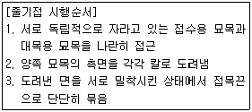
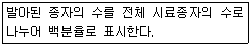

산림기능사 (2014-07-20 기출문제)
1과목: 조림 및 육림기술
1. 우량한 종자의 채집을 목적으로 지정한 숲은?
- 산지림
- 채종림
- 종자림
- 우량림
(정답률: 91%)

2. 산림갱신을 위하여 대상지의 모든 나무를 일시에 베어내는 작업법은?
- 개벌작업
- 산벌작업
- 모수작업
- 택벌작업
(정답률: 86%)
3. 다음이 설명하고 있는 줄기접 방법으로 옳은 것은?

- 절접
- 할접
- 기접
- 교접
(정답률: 60%)
4. 낙엽이 쌓이고 분해된 성분으로 구성된 토양 단면 층은?
- 표토층
- 모재층
- 심토층
- 유기물층
(정답률: 90%)
5. 임지 보육상 비료목으로 적당한 수종은?
- 소나무
- 잣나무
- 오리나무
- 느티나무
(정답률: 91%)
6. 산성 토양을 중화시키는 방법으로 가장 효과가 빠른 것은?
- 석회를 사용한다.
- NAA나 IBA를 사용한다.
- 두엄을 많이 섞어준다.
- 토양미생물을 접종한다.
(정답률: 88%)
7. 다음 설명하는 용어로 옳은 것은?

- 효율
- 순량률
- 발아율
- 종자율
(정답률: 84%)
8. 종자의 결실량이 많고 발아가 잘 되는 수종과 식재 조림이 어려운 수종에 대하여 주로 실시하는 조림방법은?
- 소묘조림
- 대묘조림
- 용기조림
- 직파조림
(정답률: 72%)
9. 우리나라의 산림대에 대한 설명으로 옳은 것은?
- 온대림과 냉대림으로 구분된다.
- 온대림과 난대림으로 구분된다.
- 난대림, 온대림, (아)한대림으로 구분된다.
- 난대림, 온대림, 온대북부림으로 구분된다.
(정답률: 74%)
10. 곰솔에 관한 설명으로 옳지 않은 것은?
- 암수딴그루이다.
- 바다 바람에 강하다.
- 근계는 심근성이고 측근의 발달이 왕성하다.
- 양수수종이다.
(정답률: 75%)
11. 한 나무에 암꽃과 수꽃이 달리는 암수한그루 수종은?
- 주목
- 은행나무
- 사시나무
- 상수리나무
(정답률: 60%)
12. 접목을 할 때 접수와 대목의 가장 좋은 조건은?
- 접수와 대목이 모두 휴면상태일 때
- 접수와 대목이 모두 왕성하게 생리적 활동을 할 때
- 접수는 휴면상태이고, 대목은 생리적 활동을 할 때
- 접수는 생리적 활동을 하고, 대목은 휴명상태일 때
(정답률: 87%)
13. 군상 식재지 등 조림목의 특별한 보호가 필요한 경우 적용하는 풀베기 방법으로 가장 적합한 것은?
- 줄베기
- 전면베기
- 둘레베기
- 대상베기
(정답률: 69%)
14. 갱신기간에 제한이 없고 성숙 임목만 선택해서 일부 벌채하는 것은?
- 왜림작업
- 택벌작업
- 산벌작업
- 맹아작업
(정답률: 83%)
15. 다음 중 생가지치기로 인한 부후의 위험성이 가장 높은 수종은?
- 소나무
- 삼나무
- 벚나무
- 일본잎갈나무
(정답률: 78%)
16. 윤벌기가 80년이고 벌채구역이 4개인 임지에서의 회귀년의 기간으로 알맞은 것은?
- 20년
- 25년
- 30년
- 40년
(정답률: 86%)
17. 인공조림과 천연갱신의 설명으로 옳지 않은 것은?
- 천연갱신에는 오랜 시일이 필요하다.
- 인공조림은 기후, 풍토에 저항력이 강하다.
- 천연갱신으로 숲을 이루기까지의 과정이 기술적으로 어렵다.
- 천연갱신과 인공조림을 적절히 병행하면 조림성과를 높일 수 있다.
(정답률: 81%)
18. 밤나무를 식재면적 1ha에 묘목간 거리 5m로 정사각형 식재할 때 소요되는 묘목의 총 본수는?
- 400본
- 500본
- 1200본
- 3000본
(정답률: 80%)
19. 음수 갱신에 좋으며 예비벌, 하종벌, 후벌의 3단계로 모두 벌채되고 새로운 임분이 동령림으로 나타나게 하는 작업종으로 옳은 것은?
- 저림작업
- 택벌작업
- 모수작업
- 산벌작업
(정답률: 80%)
20. 종자를 미리 건조하여 밀봉 저장할 때 다음 중 가장 적정한 함수율은?
- 상관없음
- 약 5~10%
- 약11~15%
- 약16~20%
(정답률: 81%)
21. 묘목의 뿌리가 2년생, 줄기가 1년생을 나타내는 삽목묘의 연령 표기가 옳은 것은?
- 1 - 2묘
- 2 - 1묘
- 1/2묘
- 2/1묘
(정답률: 72%)
22. 곰솔 1 - 1묘의 지상부 무게 27g, 지하부 무게 9g일 때 T/R율은?
- 0.3
- 3.0
- 18.0
- 6.0
(정답률: 86%)
23. 일정한 규칙과 형태로 묘목을 식재하는 배식설계에 해당되지 않는 것은?
- 정방형 식재
- 장방형 식재
- 정육각형 식재
- 정삼각형 식재
(정답률: 73%)
24. 조림지에 침입한 수종 등 불필요한 나무 제거를 주목적으로 하는 작업으로 가장 적합한 것은?
- 산벌
- 덩굴치기
- 풀베기
- 어린나무 가꾸기
(정답률: 79%)
25. 점파로 파종하는 수종으로 옳은 것은?
- 은행나무, 호두나무
- 주목, 아까시나무
- 노간주나무, 옻나무
- 전나무, 비자나무
(정답률: 80%)
2과목: 산림보호
26. 곤충의 몸에 대한 설명으로 옳지 않은 것은?
- 기문은 몸의 양옆에 10쌍 내외가 있다.
- 곤충의 체벽은 표피, 진피층, 기저막으로 구성되어 있다.
- 대부분의 곤충은 배에 각 1쌍씩 모두 6개의 다리를 가진다.
- 부속지들이 마디로 되어 있고 몸 전체도 여러 마디로 이루어진다.
(정답률: 70%)
27. 수정된 난핵이 분열하여 각각 개체로 발육하는 것으로서 1개의 수정난에서 여러 개의 유충이 나오는 곤충의 생식방법은 무엇인가?
- 단위생식
- 다배생식
- 양성생식
- 유생생식
(정답률: 75%)
28. 산림환경관리에 대한 설명으로 옳지 않은 것은?
- 천연림 내에서는 급격한 환경변화가 적다.
- 복층림의 하층목은 상층목보다 내음성 수종을 선택 하여야 한다.
- 혼효림은 구성 수종이 다양하여 특정병해의 대면적 산림피해가 발생하기 쉽다.
- 천연림은 성립과정에서 여러 가지 도태압을 겪어왔으므로 특정 병해에 대한 저항성이 강하다.
(정답률: 77%)
29. 잣나무털녹병에 대한 설명으로 옳지 않은 것은?
- 송이풀 제거작업은 9월 이후 시행해야 효과적이다.
- 여름포자는 환경이 좋으면 여름동안 계속 다른 송이풀에 전염한다.
- 여름포자가 모두 소실되면 그 자리에 털 모양의 겨울포자퇴가 나타난다.
- 중간기주에서 형성된 담자포자는 바람에 의하여 잣나무 잎에 날아가 기공을 통하여 침입한다.
(정답률: 65%)
30. 볕데기 현상의 원인은 무엇인가?
- 급격한 온도변화
- 급격한 토양 내 양분 용탈
- 대기 중 오존농도의 급격한 증가
- 대기 중 황산화물의 급격한 감소
(정답률: 80%)
31. 어린 묘가 땅 위에 나온 후 묘의 윗부분이 썩는 모잘록병의 병증을 무엇이라고 하는가?
- 수부형
- 근부형
- 도복형
- 지중부패형
(정답률: 58%)
32. 솔나방 발생 예찰(유충 밀도조사)에 가장 적합한 시기는?
- 6월 중
- 8월 중
- 10월 중
- 12월 중
(정답률: 47%)
33. 솔잎혹파리는 일반적으로 1년에 몇 회 발생하는가?
- 1회
- 2회
- 3회
- 5회
(정답률: 78%)
34. 대기오염에 의한 급성피해증상이 아닌 것은?
- 조기낙엽
- 엽록괴사
- 엽맥간 괴사
- 엽맥 황화현상
(정답률: 59%)
35. 아황산가스에 강한 수종만으로 올바르게 묶인 것은?
- 가시나무, 편백, 소나무
- 동백나무, 가시나무, 소나무
- 동백나무, 전나무, 은행나무
- 은행나무, 향나무, 가시나무
(정답률: 75%)
36. 향나무 녹병균은 배나무를 중간숙주로 기생하여 오렌지색 별무늬가 나타나는 시기로 가장 옳은 것은?
- 3~4월
- 6~7월
- 8~9월
- 10~11월
(정답률: 67%)
37. 솔나방의 월동형태와 월동장소로 짝지어진 것 중 옳은 것은?
- 알 - 솔잎
- 유충 - 솔잎
- 알 - 낙엽 밑
- 유충 - 낙엽 밑
(정답률: 54%)
38. 기상에 의한 피해 중 풍해의 예방법으로 옳지 않은 것은?
- 택벌법을 이용한다.
- 묘목 식재 시 밀식 조림한다.
- 단순동렴림의 조성을 피한다.
- 벌채 작업 시 순서를 풍향의 반대 방향부터 실핸 한다.
(정답률: 61%)
39. 성충으로 월동하는 것끼리 짝지어진 것은?
- 미국흰불나방, 소나무좀
- 소나무좀, 오리나무잎벌레
- 잣나무넓적잎벌, 미국흰불나방
- 오리나무잎벌레, 잣나무넓적잎벌
(정답률: 50%)
40. 기주교대를 하는 수목병이 아닌 것은?
- 포플러잎녹병
- 소나무 혹병
- 오동나무 탄저병
- 배나무 붉은별무늬병
(정답률: 55%)
3과목: 임업기계일반
41. 도끼날의 종류별 연마 각도(° )로 옳지 않은 것은?
- 벌목용 : 9 ~ 12
- 가지치기용 : 8 ~ 10
- 장작패기용(활엽수) : 30 - 35
- 장작패기용(침엽수) : 25 ~ 30
(정답률: 57%)
42. 기계톱 체인의 깊이제한부 역할은?
- 절삭 폭을 조절한다.
- 절삭 두께를 조절한다.
- 절삭 각도를 조절한다.
- 절삭 방향을 조정한다.
(정답률: 81%)
43. 다음중 양묘용 장비로 사용되는 것이 아닌 것은?
- 지조결속기
- 중경제초기
- 정지작업기
- 단근굴취기
(정답률: 52%)
44. 체인톱의 안내판 1개가 수명이 다하는 동안 체인은 보통 몇 개 사용할 수 있는가?
- 1/2개
- 2개
- 3개
- 4개
(정답률: 72%)
45. 다음중 기계톱의 체인을 돌려주는 동력전달장치는?
- 실린더
- 플라이휠
- 점화플러그
- 원심클러치
(정답률: 67%)
46. 기계톱의 연료와 오일을 혼합할 때 휘발유 15리터 이면 오일의 적정 양은 얼마인가? (단, 오일은 특수오일이 아님)
- 0.06 리터
- 0.15 리터
- 0.6 리터
- 1.5 리터
(정답률: 78%)
47. 엔진이 시동되지 않을 경우 예상되는 원인이 아닌 것은?
- 오일탱크가 비어 있다.
- 연료탱크가 비어 있다.
- 기화기 내 연료가 막혀 있다.
- 플러그 점화케이블 결함이 있다.
(정답률: 76%)
48. 기계톱 최초 시동 시 쵸크를 닫지 않으면 어떤 현상 때문에 시동이 어렵게 되는가?
- 연료가 분사되지 않기 때문이다.
- 공기가 소량 유입하기 때문이다.
- 기화기 내 연료가 막혀 있다.
- 공기 내 연료비가 낮기 때문이다.
(정답률: 59%)
49. 기계톱 작업자를 위한 안전장치로 옳지 않은 것은?
- 스프라켓 덮개
- 체인잡이 볼트
- 후방손잡이 보호판
- 스로틀레버 차단판
(정답률: 59%)
50. 기계톱의 사용 시 오일함유비가 낮은 연료의 사용으로 나타나는 현상으로 옳은 것은?
- 검은 배기가스가 배출되고 엔진에 힘이 없다.
- 오일이 연소되어 퇴적물이 연소실에 쌓인다.
- 엔진 내부에 기름칠이 적게 되어 엔진을 마모시킨다.
- 스파크플러그에 오일막이 생겨 녹킹이 발생할 수 있다
(정답률: 81%)
51. 다음 중 집재용 장비로만 묶어진 것은?
- 윈치, 스키더
- 윈치, 프로세서
- 타워야더, 하베스터
- 모터그레이더, 스키더
(정답률: 59%)
52. 안전사고 예방준칙과 관계가 먼 것은?
- 작업의 중용을 지킬 것
- 율동적인 작업을 피할 것
- 규칙적인 휴식을 취할 것
- 혼자서는 작업하지 말 것
(정답률: 72%)
53. 디젤기관과 비교했을 때 가솔린기관의 특성으로 옳지 않은 것은?
- 전기점화 방식이다.
- 배기가스 온도가 낮다.
- 무게가 가볍고 가격이 저렴하다.
- 연료는 기화기에 의한 외부혼합방식이다.
(정답률: 68%)
54. 무육톱의 삼각톱날 꼭지각은 몇 도(° )로 정비 하여야 하는가?
- 25
- 28
- 35
- 38
(정답률: 57%)
55. 기계톱의 동력연결은 어떤 힘에 의하여 스프라켓에 전달되는가?
- 반력
- 구심력
- 중력과 마찰력
- 원심력과 마찰력
(정답률: 84%)
56. 엑셀레버를 잡아도 엔진이 가속되지 않을 때 예상 되는 원인이 아닌 것은?
- 에어휠터가 더럽혀져 있다.
- 연료 내 오일의 혼합량이 적다.
- 점화코일과 단류장치가 결함이 있다.
- 기화기 조절이 잘못되었거나 결함이 있다.
(정답률: 48%)
57. 다음 중 작업도구와 능률에 관한 기술로 가장 거리가 먼 것은?
- 자루의 길이는 적당히 길수록 힘이 강해진다.
- 도구의 날 끝 각도가 클수록 나무가 잘 부셔진다.
- 도구는 가볍고 내려치는 속도가 빠를수록 힘이 세어진다.
- 도구의 날은 날카로운 것이 땅을 잘 파거나 잘 자를 수 있다.
(정답률: 69%)
58. 특별한 경우를 제외하고 도끼를 사용하기에 가장 적합한 도끼 자루의 길이는?
- 사용자 팔 길이
- 사용자 팔 길이의 2배
- 사용자 팔 길이의 0.5배
- 사용자 팔 길이의 1.5배
(정답률: 83%)
59. 4행정기관과 비교한 2행정기관의 특징으로 옳지 않은 것은?
- 중량이 가볍다.
- 저속운전이 용이하다.
- 시동이 용이하고 바로 따뜻해진다.
- 배기음이 높고 제작비가 저렴하다.
(정답률: 77%)
60. 트랙터를 이용한 집재시 안전과 효율성을 고려했을 때 일반적으로 작업 가능한 최대 경사도(° )로 옳은 것은?
- 5 ~ 10
- 15 ~ 20
- 25 ~ 30
- 35 ~ 40
(정답률: 58%)